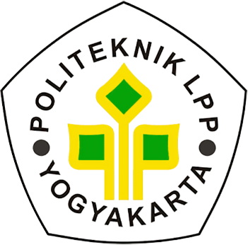

Proposal Tugas Akhir
Estimasi dan Komparasi Cadangan Karbon
Monokultur dan Polikultur Sawit-Karet di Lahan Petani Swadaya
Studi kasus komprehensif pada lahan petani swadaya di Bengkulu untuk mendukung pencapaian target Indonesia FOLU Net Sink 2030.
Disusun Oleh
Muhammad Ibnu Mukhlisin A.
NIM: 23.05.117
Dosen Pembimbing
Azhari Rizal, S.Tr., M.M.A
NIDN: 0505048602
Geser ke kanan atau tekan → untuk memulai


 Persamaan Kelapa Sawit
Persamaan Kelapa Sawit Persamaan Pohon Karet
Persamaan Pohon Karet